Inhalt Index DeskTop Bronstein

 Geometrie Ebene Trigonometrie Geodätische Anwendungen Vermessungstechnische Anwendungen
Geometrie Ebene Trigonometrie Geodätische Anwendungen Vermessungstechnische Anwendungen


Der Neupunkt N ergibt sich als Schnittpunkt zweier Bögen mit den gemessenen Radien sAN und sBN um die zwei Punkte A und B mit bekannten Koordinaten.
Berechnet werden die unbekannte Länge sAB und aus den nun bekannten drei Seiten im Dreieck ABN die Winkel. Eine zweite hier nicht betrachtete Lösung geht von einer Zerlegung des schiefwinkligen Dreieckes in zwei rechtwinklige Dreiecke aus.
Gegeben: 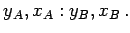 Gemessen: 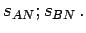 Gesucht: 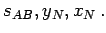
Lösung:
 |
(3.118a) |
 |
(3.118b) |
| 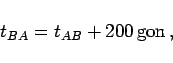 | (3.118c) |
| 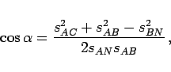 | (3.118d) |
| 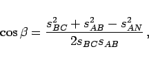 | (3.118e) |
| 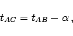 | (3.118f) |
| 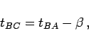 | (3.118g) |
| 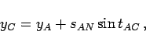 | (3.118h) |
| 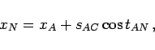 | (3.118i) |
| 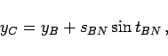 | (3.118j) |
| 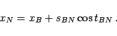 | (3.118k) |